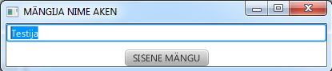
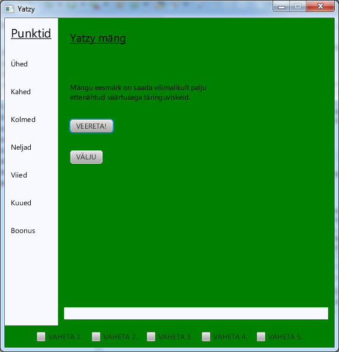
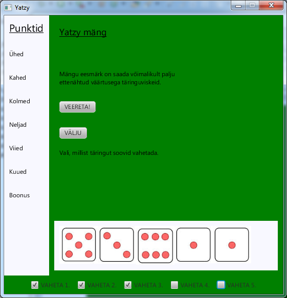
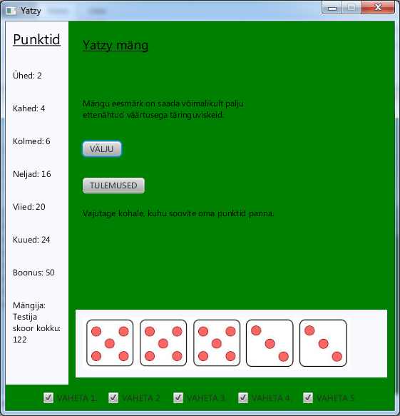
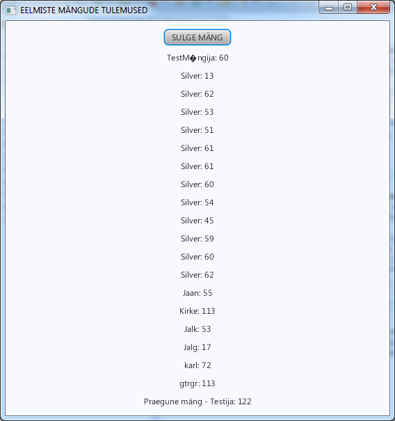

Autorid Silver Pajumäe ja Martin Külvik
Mäng põhineb kuulsa täringumängu esimesel poolel, kus eesmärk on iga raundiga visata võimalikult palju ühesuguseid numbreid. Igal raudil on võimalik kaks korda valida, millised täringud alles jätta ja milliseid uuesti visata. Kui visked on tehtud, saab mängija valida, millise numbri alla ta soovib oma skoori lisada. Kui mängija saab kokku üle 50 punkti, antakse talle veel 50 boonuspunkti.
1) Esmalt palutakse mängijal endale nimi valida.

2) Avaneb mängu põhivaade. Vasakul on punktitabel ja alla ilmuvad täringud.

3) Kui kasutaja vajutab veeretamise nuppu, ilmub täringute visketulemus. Nüüd saab valida, millised täringud välja vahetada.

4) Kui ühe raundi viskekorrad tehtud, tuleb saadud skoor vasakule punktitabelisse panna. Selleks tuleb klõpsata valitud ühikutele.
5) Kui kõik raundid läbitud, ilmub vasakule selle mängu lõppskoor.

6) Soovi korral saab nüüd vaadata ka kõigi eelmiste mängude tulemusi.
